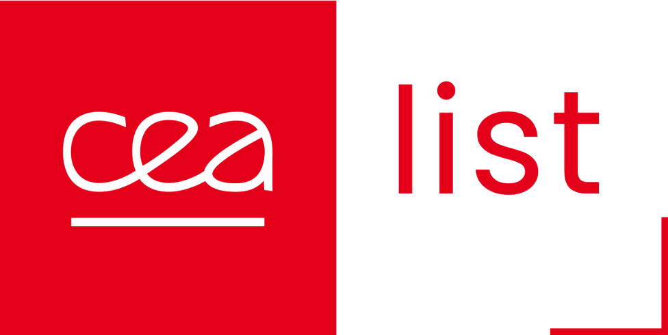

LaGSplat: from videos to physics-governed interactive simulation

A UR robot holds a hyperelastic tab in its gripper and makes it deform as it moves.
held-out video
LaGSplat reconstruction on a video never seen during training
Ten seconds taken from the last minute of the recording, which was never used for training.
tracking window
Window that follows the gripper
filmedLaGSplat reconstruction
fixed camera
Full camera frame
filmedLaGSplat reconstruction
interactive simulation
Latent state and 3D decoder
Push the tab with the mouse in the 3D scene, or move the arm with the slider.
LNN dynamics · latent state
Latent state and arm position over time
shaded band: range covered by the recording
dataset · encoded states
Latent space visualisation
drag the dot to explore the deformation space of the tab
current state
latent effort Jᵀf
recorded frames
3D decoder · 85 000 Gaussians · four views
3D scene
left-drag on the tab to push it · right-drag to rotate · scroll to zoom
loading